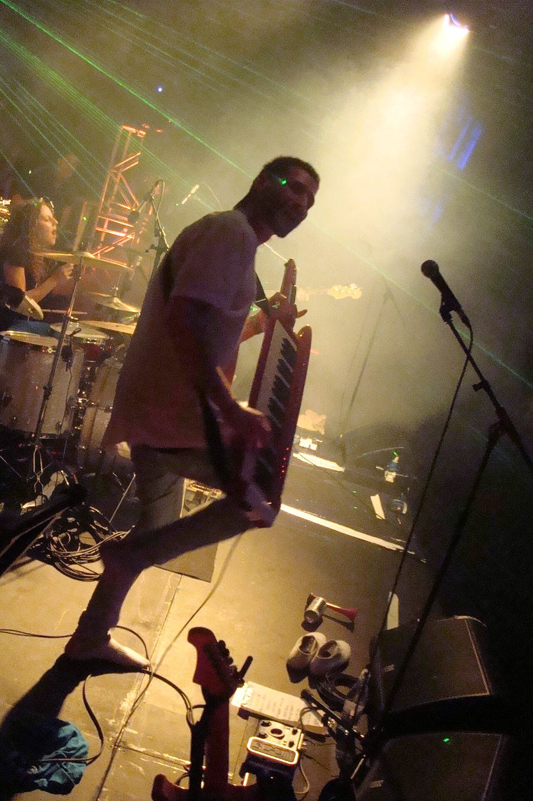

Kissy Sell Out [Audio]: He's bringing the band



STREAMING AUDIO INTERVIEW
UK electro kid Kissy Sell Out already proved himself last year to be one of the fastest rising stars working in dance (not to mention youngest). Hyped as the next generation of hosts on Radio 1, broadcasting alongside old timers like Pete Tong and Judge Jules, while he’s still in his early 20s he’s already lent his quirky remix skills to everyone from Gwen Stefani and All Saints through to Groove Armada and Calvin Harris. But after a massive ‘08, he wasn’t satisfied with resting on the laurels he’d already built up as a club DJ/producer. When he makes it back to Australia this June Long Weekend, he’ll be bringing a full band with him!
“I went and made an album that was a bit more leftfield, and slightly more ambitious than I think people were expecting me to do,” he told ITM, referring to his upcoming debut album Youth and its fusion of rock/pop/electro, which has steered things away from the dancefloor somewhat. “When you hear the album, because it’s so song based, it would be ridiculous to try and tour it by doing some kind of ‘laptop live’ show, it would just never work. So it always made sense to do it with a live band.”
The last time Kissy Sell Out was in Australia, he was touring in support of his contribution to Ministry of Sound’s Mashed 4 compilation, so when he returns over the June Long Weekend for a run of festivals that includes We Love Sounds and Winter Sound System, we’ll be seeing a completely different side to him. ITM’s Angus Paterson finds a little bit more about what we can expect.
Catch Kissy Sell Out at the following shows:
Saturday 6th June – We Love Sounds, Sydney
Saturday 6th June – We Love Sounds Official Afterparty #1 (DJ set), Sydney
Sunday 7th June – Warehouse Festival (DJ set), Canberra
Sunday 7th June – Winter Sound System, Melbourne
Monday 8th June – We Love Sounds, Adelaide
“Look out for Kissy Sell Out’s debut album Youth this year, and if you’d like a preview take a squiz at the video for The Kiss below. Check out ITM’s Festival Pages for more info on all the winter festival action we’ve got coming up.